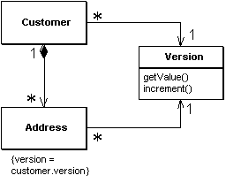
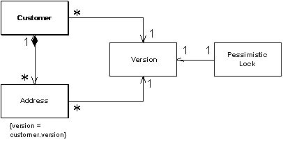
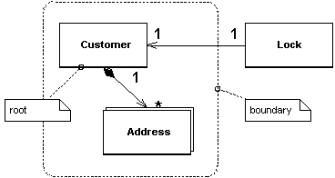

| Home | Articles | Talks | Links | Contact Me | ISA | ThoughtWorks |
by David Rice and Matt Foemmel
Lock a set of related objects with a single lock

Often groups of objects can be edited as a group. Perhaps you have a customer and its set of addresses. When using the application it makes sense that if you want to lock any one of these items, you should lock all of them. Having a separate lock for each individual object presents a number of challenges. The first problem is that anyone manipulating these objects has to write code that can find all the objects in the group in order to lock them. This is easy enough for a customer and its addresses but gets tricky as you have more locking groups. And what if the groups get complicated? And where is this behavior when your framework is managing lock acquisition? Then, if your locking strategy requires that an object be loaded in order that it be locked, such as with Optimistic Offline Lock, locking a large group will present a performance problem. And if using Pessimistic Offline Lock a large lock set is a management headache and increases lock table contention.
A Coarse-Grained Lock is a single lock that covers many objects. Not just does this simplify the locking action itself, it also means that you don't have load all the members of a group in order to lock them.
The first step to implementing Coarse-Grained Lock is to create a single point of contention for locking a group of objects. This allows that only one lock be necessary for locking the entire set. Then provide the shortest path possible to finding that single lock point in order to minimize the group members which must be identified and possibly loaded into memory in the process of obtaining that lock.
With the Optimistic Offline Lock, having each item in a group share a version creates the single point of contention. And this means sharing the same version, not an equal version. Incrementing this version will lock the entire group with a shared lock. Setup your model to point every member of the group at the shared version and you have certainly minimized the path to the point of contention.
Figure 1: Sharing a version
Using a shared Pessimistic Offline Lock will require that each member of the group share some sort of lockable token. The Pessimistic Offline Lock must then be acquired on this token. As Pessimistic Offline Lock is often used as a complement to Optimistic Offline Lock a shared version object makes an excellent candidate for the role of lockable token.
Figure 2: Locking a shared version
Eric Evans and David Siegel[missing reference] define an aggregate as a cluster of associated objects that we treat as a unit for data changes. Each aggregate has a root that provides the only access point to members of the set and a boundary that defines what gets included in the set. This aggregate has the characteristics that call for a Coarse-Grained Lock since working with any member of the aggregate requires locking all members. Locking an aggregate yields an alternative to a shared lock that we'll call a root lock. This works by locking the root and making all lock usage within the aggregate use that root lock. This approach gives us a single point of contention.
Using a root lock as a Coarse-Grained Lock makes it necessary to implement navigation to the root in your object graph. This allows a locking mechanism, upon receiving a request to lock any object in the aggregate, to navigate to the root and lock it instead. This navigation can be accomplished in a couple of fashions. You can maintain a direct navigation to the root for each object in the aggregate, or you can use a sequence of intermediate relationships. For example, in a hierarchy, the obvious root is the top level parent. You can link the descendents to the top level parent directly, or you can give each node a link to its immediate parent and navigate that structure to reach the root. In a large graph the later strategy might cause performance problems as each parent must be loaded in order to determine whether it has a parent. Be sure to use a Lazy Load when loading the objects that make up the path to your root. This will not only prevent objects from being loaded before they are needed but will prevent an infinite mapping loop should you be mapping a bidirectional relationship. Be wary of the fact that if Lazy Load for a single aggregate occur across multiple system transactions you may end up with an aggregate built from inconsistent parts. That, of course, is not good.
Figure 3: Locking the root
Note that a shared lock also works for locking an aggregate as locking any object in the aggregate will simultaneously lock the root.
Both the shared lock and root lock implementation of Coarse-Grained Lock have their trade-offs. When using a relational database the shared lock carries the burden that most all of your selects will require a join to the version table. On the other hand, loading objects while navigating to the root could be a performance hit as well. The root lock and Pessimistic Offline Lock perhaps make an odd combination. By the time you navigate to the root and lock it you may need to reload a few objects to guarantee their freshness. And, as always, building a system against a legacy data store will place numerous constraints on your implementation choice. Locking implementations abound. The number of subtleties even more numerous. Be sure to arrive at an implementation that suits your needs.
The most obvious place to use a Coarse-Grained Lock is to satisfy business requirements. This is the case when locking an aggregate. Consider a lease object that owns a collection of assets. It probably does not make business sense that one user edits the lease while another user simultaneously edits an asset. Locking either the asset or the lease ought to result in the lease and all of its assets being locked.
A very positive outcome of using Coarse-Grained Lock is the decreased cost of acquiring and releasing locks. This is certainly a legitimate motivation for using Coarse-Grained Lock. The shared lock can be used beyond the concept of Evans' aggregate. But be careful when working from non-functional requirements such as performance. Beware of creating unnatural object relationships in order to facilitate Coarse-Grained Lock.
 |  |